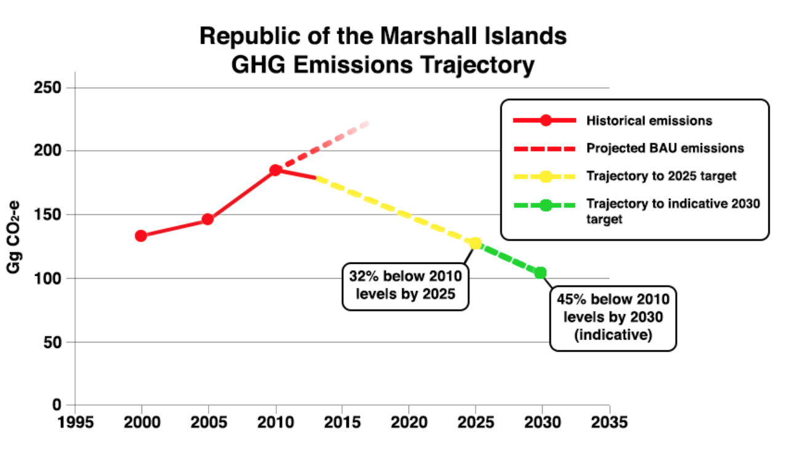

The Republic of the Marshall Islands (RMI) is committed to the successful conclusion of negotiations under the Ad-Hoc Working Group on the Durban Platform for Enhanced Action (ADP) in order to adopt, at COP21, a new legally-binding agreement under the UNFCCC applicable to all Parties, which will come into effect and be implemented from 2020.
In accordance with the relevant paragraphs of Decisions 1/CP.19 and 1/CP.20, RMI hereby communicates its Intended Nationally Determined Contribution (INDC) towards achieving the ultimate objective of the Convention, and provides up-front information in tabular format to facilitate the clarity, transparency and understanding of the INDC. RMI is also pleased to provide additional accompanying information, including information relating to mitigation, adaptation planning and support for implementation.
RMI commits to a quantified economy-wide target to reduce its emissions of greenhouse gases (GHG) to 32% below 2010 levels by 2025.
RMI communicates, as an indicative target, its intention to reduce its emissions of GHGs to 45% below 2010 levels by 2030.
These targets progress beyond RMI’s Copenhagen pledge, and are based on the more rigorous data in RMI’s forthcoming Second National Communication. They put RMI on a trajectory to nearly halve GHG emissions between 2010 and 2030, with a view to achieving net zero GHG emissions by 2050, or earlier if possible. This will require a significant improvement in energy efficiency and uptake of renewables, in particular solar and biofuels, as well as transformational technology, such as Ocean Thermal Energy Conversion (OTEC).
| Parameter | Information | |
|---|---|---|
| Timeframe and/or period for implementation | Start year: 2020 | End year: 2025 | |
| Type of commitment | Absolute economy-wide emission reduction target (excluding LULUCF) | |
| Reference point or base year | 2010 base year (~185 Gg CO2-e) | |
| Estimated quantified impact on GHG emissions | Commitment to reduce GHG emissions by 32% below 2010 levels by 2025 Indicative target to reduce GHG emissions by 45% below 2010 levels by 2030 | |
| Coverage | % of national emissions | ~100% |
| Sectors |
|
|
| Gases | Carbon dioxide (CO2) Methane (CH4) Nitrous Oxide (N2O) [Note: emissions of GHGs not listed are negligible] | |
| Geographical boundaries | Whole of country | |
| Intention to use market-based mechanisms to meet target | no | |
| Land sector accounting approach | N/A | |
| Metrics and methodology | Consistent with methodologies used in RMI’s forthcoming Second National Communication (1996 IPCC Guidelines). | |
| Planning Process | RMI’s INDC was developed through an all-inclusive process of engaging relevant stakeholders in and outside government, including the country’s first National Climate Change Dialogue and three rounds of stakeholder consultations. This process has produced genuine national ownership of the INDC and highlighted synergies with other UNFCCC-related processes, including National Communications, Biennial Update Reports, National Adaptation Planning, and Nationally Appropriate Mitigation Actions (NAMAs). | |
| Fair and ambitious | RMI’s emissions are negligible in the global context (<0.00001% of global emissions). According to data reflected in RMI’s forthcoming Second National Communication, RMI’s emissions peaked around 2009 and have been trending downwards since, in line with the goals in the National Energy Plan and National Climate Change Policy, based on the ‘National Climate Change Roadmap’ (2008). Given its low GDP per capita (approx. USD3,600 [1] ), extreme vulnerability and dependence on external support, RMI’s proposed targets are ambitious compared to those proposed by other countries and measured against any objective indicators. They put RMI on a trajectory to nearly halve GHG emissions between 2010 and 2030, with a view to achieving net zero GHG emissions by 2050, or earlier if possible. RMI’s pursuit of an absolute, economy-wide emission reduction target is a far more ambitious approach than the contemplation in Decision 1/CP.20 that “LDCs and SIDS may communicate information on strategies, plans and actions for low GHG emission development…” (para. 11) |
|
RMI’s historical GHG emissions from 2000 to 2010 (per the forthcoming Second National Communication) and the estimated emissions trajectory reflected in the new targets contained in the INDC are illustrated below:

The Republic of the Marshall Islands (RMI) is a Small Island Developing State and home to nearly 70,000 people, scattered across 24 low-lying coral atolls in the North Pacific. With an average elevation of 2 metres, RMI is uniquely vulnerable to the impacts of climate change. Though RMI’s total greenhouse gas emissions are negligible on a global scale, the country takes its national motto, “Jepilpilin ke ejukaan” (“Accomplishment through joint effort”), very much to heart. RMI recognizes that it has a role to play in the global effort to combat climate change, demonstrating that even with its limited means it will undertake the most ambitious action possible.
Since its independence, RMI has been heavily reliant on external assistance, with grants averaging 60% of Gross Domestic Product (GDP). International support will remain important as RMI fulfils its National Strategic Development Plan: Vision 2018[2] (NSP). The NSP provides a general framework for sustainable development, and contains linkages to climate change and disaster risk management through its goal of environmental sustainability. It is a guide for development and progress in the medium term, through a three-year rolling plan, and will be updated continually for use in meeting longer-term objectives as RMI moves towards the scheduled completion of funding under “The Compact of Free Association, as Amended” in 2023[3].
Current Status
The estimated sectoral mix of RMI’s anthropogenic GHG emissions (CO2-e), as calculated for 2010 in the forthcoming Second National Communication, is as follows: electricity generation (~54%), land and sea transport (~12%),waste (~23%), and other sectors (~11%).
Almost 90% of national energy needs are currently satisfied by imported petroleum products, although biomass remains important for cooking and crop drying on outer islands. All CO2 emissions are the result of combustion of imported fossil fuels in five sectors:
Like other island nations in the Pacific, RMI suffers from high and volatile fuel prices, while lacking any known fossil fuel reserves of its own.
Following a major fuel price spike in July 2008, the RMI Government declared a state of economic emergency. This quickly drew national attention to the need to reduce the reliance on imported fossil fuels, and to scale-up renewable energy as a replacement. Prior to 2008, the emphasis had been mainly on small-scale solar for the households of the outer islands. However, since 2008, there has been a rapid expansion of solar investment to add renewable energy generation to the existing diesel-powered grids on the urban islands. This, along with the introduction of supply-side efficiency measures by the Marshalls Energy Company (MEC) and demand-side load reductions, has led to a recent decline in fuel oil usage for electricity generation.
The vision for the proposed 2014 National Energy Policy (NEP) is “an improved quality of life for the people of the Marshall Islands through clean, reliable, affordable, accessible, environmentally appropriate and sustainable energy services.” Reducing fossil fuel imports is the major goal, with the uptake of renewable energy and further energy efficiency improvements on both the demand and supply sides expected to replace more than one-third of fossil fuels for electricity and transport by 2030.
A monitoring plan has been developed as part of the National Energy Policy to tie the key strategies of the energy sub-sectors to the overall vision of the energy sector and the Vision 2018. The guiding principles for implementing this Policy are aligned with the principles adopted for national, sub-regional, regional and international initiatives, which include the Micronesian Energy Initiative, the Regional Framework for Action on Energy Security in the Pacific (FAESP), and the Sustainable Energy for All Initiative Goals.
Planned Actions
In preparing its INDC, RMI considered various scenarios for the potential contribution of renewable energy and energy efficiency initiatives in the power generation and transport sectors, as well as the potential role of measures to reduce emissions from the waste, cooking and lighting sectors.
As currently estimated, progress towards achieving RMI’s targets would entail reducing emissions from: the electricity generation sector by 55% in 2025, and 66% in 2030; transportation (including domestic shipping) by 16% in 2025 and 27% in 2030; waste by 20% by 2030; and 15% from other sectors (cooking and lighting) by 2030.
Specific areas of action contemplated to make progress towards the INDC targets include:
Many of these actions will depend on the availability of the necessary finance and technology support, as described in the section on “Support for Implementation.”
Efforts to overachieve
RMI will undertake the strongest possible efforts to achieve and, where possible, over-perform on the commitment in its INDC.
For example, should potential plans and specific pathways for deployment of OTEC be clarified, and should practical, island-driven application be proven, this would have the potential to allow RMI to substantially over-perform on its present commitment. Further, should additional technological developments occur, and cost barriers be reduced, further progress could be possible in all relevant sectors, including energy generation and transportation. RMI looks forward to the opportunity to consider the possible deepening of its emission reduction trajectory when it seeks to update its mitigation commitment in five years’ time.
While RMI considers that the focus of INDCs should primarily be mitigation, we note the invitation to Parties in Decision 1/CP.20, para. 12 to “consider communicating their undertakings in adaptation planning or consider including an adaptation component in their INDCs”.
RMI’s people are among the most vulnerable in the world to the impacts of climate change. Many of these impacts are already occurring, inflicting damage and imposing substantial costs on the Marshallese government and people - costs that will only increase in the coming years.
RMI is committed to the strongest possible efforts in safeguarding security and human rights, as well as advancing development aspirations, in light of projected climate impacts and risks. RMI has no choice but to implement urgent measures to build resilience, improve disaster risk preparedness and response, and adapt to the increasingly serious adverse impacts of climate change. RMI commits to further developing and enhancing the existing adaptation framework to build upon integrated disaster risk management strategies, including through development and implement of a national adaptation plan (and further integration into strategic development planning tools), protecting traditional culture and ecosystem resources, ensuring climate-resilient public infrastructure and pursuing facilitative, stakeholder-driven methods to increase resiliency of privately-owned structures and resources. RMI seeks to consider, as appropriate, the legal and regulatory means to best support these approaches.
RMI also considers that adaptation action will have mitigation co-benefits, with efforts such as mangrove and agriculture rehabilitation programs likely to enhance carbon sinks as well as assist with protection of water resources and the health of the RMI people.
The RMI National Climate Change Policy Framework (NCCPF) sets out the Government of RMI’s commitments and responsibilities to address climate change. This policy framework is intended to guide the development of adaptation and energy security measures that respond to RMI’s needs with an “All Islands Approach”, foster an environment in which the RMI can be better prepared to manage the current and future impacts of climate change while ensuring sustainable development, and provide a blueprint for building resilience in partnership with regional and global partners.
In the NCCPF, RMI has identified a series of priority areas for urgent response. It is clear that RMI faces major impacts on its communities’ livelihoods and infrastructure from sea-level rise, sea surges, typhoons and rainfall intensity; water and food security issues from changing rainfall patterns and ocean acidification; health issues from rising temperatures and prolonged drought periods, as well as the potential for increasing peak wind speeds and changes to ocean circulation patterns.
In addition to the NCCPF, RMI has also developed an innovative Joint National Action Plan (JNAP) for Climate Change Adaptation and Disaster Risk Management National Action Plan (DRM NAP) that sets out actions to adapt against the effects of natural disasters and climate change.
The JNAP is an important and integral supportive element towards the achievement of RMI’s sustainable national development imperatives. The JNAP’s strategic goals, which are a combination of those addressed in the DRM NAP and the National Climate Change Policy Framework (NCCPF), are as follows:
RMI intends on regularly updating its climate vulnerability assessments and subsequently build on its existing policies to meet its ultimate goal of minimizing impacts and harm incurred by the Marshallese people. At all steps of the way, local stakeholders will be consulted to ensure community needs are best served.
Support for implementation
Climate change is a cross-cutting development issue that affects every aspect of the Marshallese way of life, and it is imperative for RMI to collectively build and strengthen its drive to a low-carbon economy and resilience to climate change impacts. RMI looks to regional and global cooperation for support in pursuit of these mitigation and adaptation-related development priorities.
While RMI considers its INDC as a full national commitment to be undertaken without pre-conditions, the country is at present heavily reliant on external assistance for capacity and financial resources in key national sectors. As a small economy, minor perturbations can lead to substantial changes in energy needs and related emissions trajectories. If national circumstances change, RMI will to the best of its ability stay on course to achieve its emissions targets. While longer-term national projections are uncertain, and private sector growth is imperative, it is evident that external assistance will continue to be important in achieving many national development objectives.
The rapid development of energy-intensive economic activities intensified RMI’s dependence on imported petroleum products, particularly in the period 2000 to 2010. The high cost of these products remains a fundamental obstacle to improving standards of living and business profitability in the country. The RMI Government is currently supported by donors and development partners to mitigate impacts of high oil prices at policy level, focused on increasing energy efficiency, minimizing the costs of imported fuels, and investing in renewable energy sources such as solar, biofuel and ocean energy.
Specifically, international support is critical to enable RMI to implement the actions enshrined in its National Energy Policy, Climate Change Policy, Joint National Action Plan, National Strategic Plan and other sectoral policies and plans. It is also important to note that RMI has made substantial progress in implementing its 2009 National Energy Plan (up to 2020), but important gaps remain, particularly in the area of private investment. RMI will need international support for is efforts to transition towards a low-emissions energy sector through greater use of renewables such as solar, biofuels and wind, and potential use of transformational technology, such as OTEC.
Finally, RMI will need substantial assistance to meet its adaptation objectives outlined in the prior section. As a highly vulnerable and low-lying island nation with no major points of elevation above 2 metres, RMI already experiences frequent and serious climate impacts, as well as natural hazard events. These impacts will continue to pose serious challenges across the full spectrum of RMI’s development prospects and priorities.